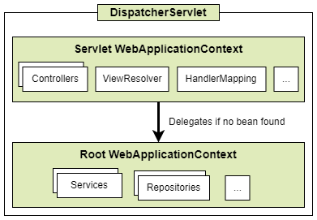

Common notes
[18], 1.1.1. Context Hierarchy

See [5] for Java Enterprise Edition evolution overview.
The process used by community for suggesting reviewing and implementing new features in Java.
See [12].

 Common notes
Common notes